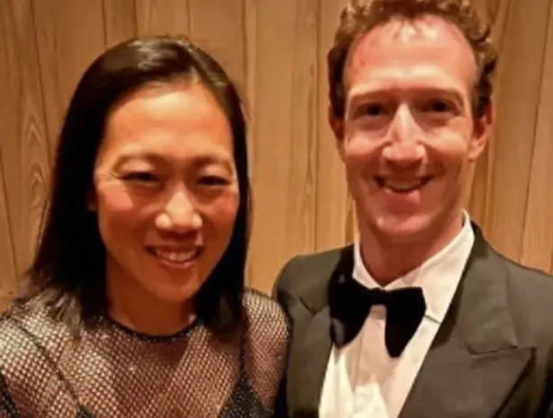
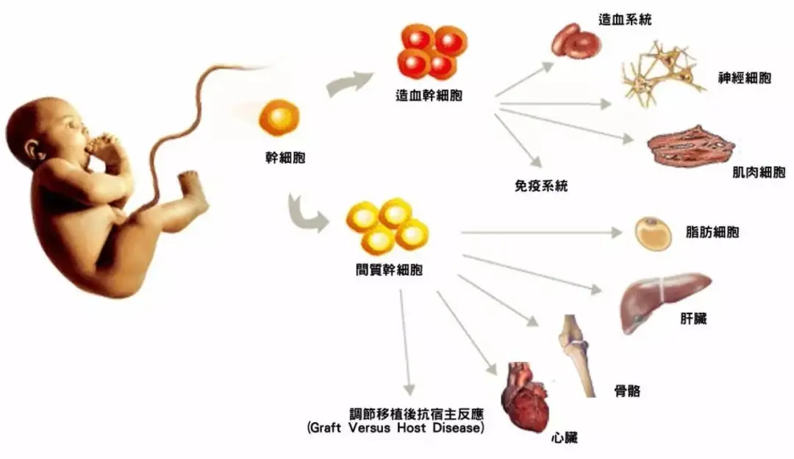
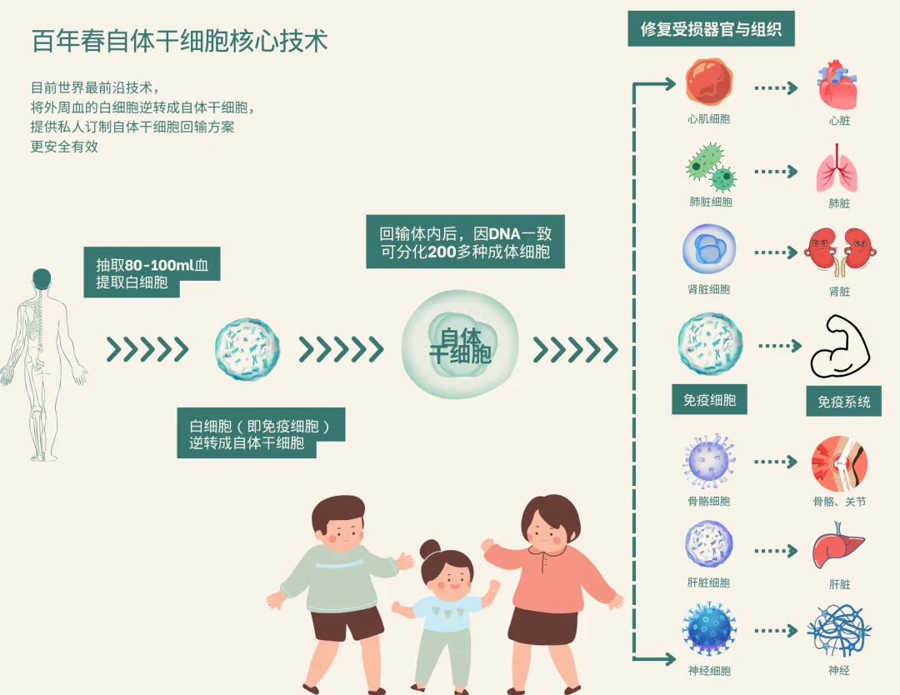
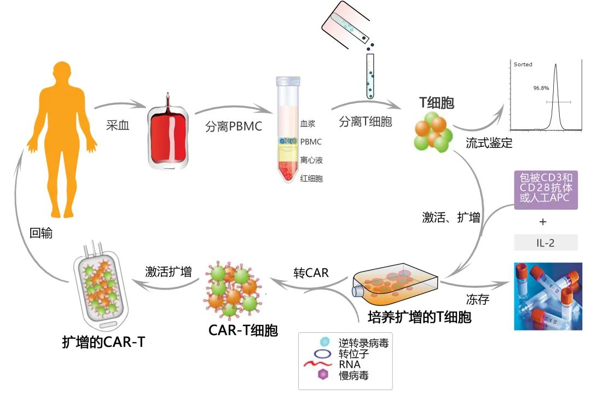

别等身体亮红灯！百年春自体干细胞，为您定制细胞级抗衰防线
2026-03-04

About Us
关于百年春
全球投资者都在押注抗衰老
古有皇帝为了延年益寿，去求仙问道，炼丹嗑药。现有富豪争先押注抗衰老。
事实上，在富豪圈投资细胞行业已经是常规现象了。公开资料显示，华尔街已有超过200位富豪投资过该领域，投资规模超过7000亿。

l59 岁的世界首富、亚马逊创始人杰夫·贝佐斯以30亿美金投资了一家细胞抗衰公司Altos Labs。通过诱导多能干细胞（iPSC）将老细胞重新年轻化。
l布莱恩·约翰逊每年花费200万美元进行细胞抗衰老疗程，试图将自己的生物年龄逆转为18岁。
l比亚迪董事长夫人捐款1.6亿,用于新型免疫治疗等前沿技术。
lFacebook创始人扎克伯格及其妻子宣布将投资2.5亿美元在纽约市启动一个新的“细胞生物中心”。
l李嘉诚斥资2亿成立和黄医药，也狂烧43亿元研发抗癌创新药。
lPayPal创始人，畅销书《从0到1》的作者，开展换血续命的研究。
积劳成疾，富豪的平均寿命在48岁
经媒体调查研究，2003年以来72位亿万富豪的死亡案例。
15名死于他杀，17名死于自杀，7名死于意外，14名被执行死刑，有19人死于疾病。
疾病堪称亿万富豪的第一杀手。这些英年早逝的富豪，平均寿命只有48岁，远远低于我国77岁的平均寿命。
社会顶端的亿万富翁之所以能积累万贯家财，虽有天时地利，但当老板，搞创业，从来就不是一条安生平稳之路。且不说创业途中常常是牵一发而动全身，稍有闪失，就是一蹶不振，一着不慎，便会满盘皆输。
多学习少上当，并非所有细胞都能抗衰
异体干细胞、自体干细胞、免疫细胞的区别
一、异体干细胞
来源：异体干细胞来源于不同个体的干细胞（常见为脐带、脐带血、胎盘等），与接受者存在基因型和免疫系统反应等方面的差异。
主要特征：
免疫排斥：异体干细胞会被我们的免疫系统识别为外来物质，可能引发免疫排斥反应，因此在回输的细胞数量需要严格管控。
遗传差异：由于个体遗传信息与接受者不完全匹配，可能影响其分化能力和功能。
分化潜能：异体干细胞能够分化成多种类型的细胞，具有修复受损组织的潜力。
质量控制：由于免疫排斥的风险，对异体干细胞的质量控制非常重要，包括筛选供体、优化处理方法以减少免疫反应等。

二、自体干细胞
来源：自体干细胞来源于接受者自身，具有完美的组织相容性，无需配型。
主要特征：
高度自我更新：自体干细胞能够不断分裂增殖，保持自身的数量稳定。
广泛分化能力：可以分化成多种类型的细胞，参与到人体的各种组织和器官修复中。
无免疫排斥：由于是自身来源，自体干细胞在移植后极少引发免疫反应，减少了移植风险。
安全性高：使用自体干细胞治疗疾病，避免了异体移植可能带来的排异反应和伦理问题及外源性疾病、遗传疾病等风险。

三、免疫细胞
来源：免疫细胞是人体内参与免疫应答或与免疫应答相关的细胞，包括淋巴细胞、树突状细胞等。
主要特征：
增殖速度快：免疫细胞具有增殖能力，可以迅速响应外界刺激。
抗瘤活性高：免疫细胞可以杀伤肿瘤细胞，发挥抗癌、抑菌的作用。
吞噬功能：免疫细胞具有吞噬功能，可以对抗外来病原体。

总结来说，
异体干细胞、自体干细胞和免疫细胞在来源、特性以及应用上各有特点。
异体干细胞具有修复受损组织的潜力，存在免疫排斥和遗传差异等挑战，时效短适合临床急救使用；
自体干细胞则具有高度的自我更新和分化能力，且安全性高，无免疫排斥问题，时效维持长，更适合长期保健治疗使用；
免疫细胞则主要负责参与人体的免疫系统，对抗外来病原体和肿瘤细胞，适合癌症患者使用；
这些细胞在生物医学研究和临床治疗中均具有重要的应用价值。